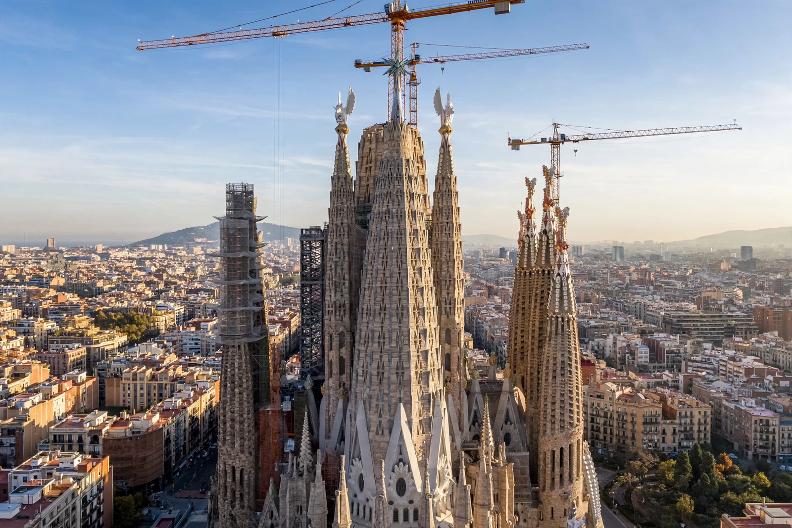

Barcelona is the capital and largest city of the autonomous community of Catalonia, and the second-most populous municipality in Spain, with a population of about 1.6 million within its administrative limits and over five million in its metropolitan area. Located on the Mediterranean coast between the mouths of the Llobregat and Besòs rivers and bounded by the Serra de Collserola ridge, it is a major Mediterranean port and a global centre for tourism, trade fairs, design and architecture — above all the work of Antoni Gaudí, whose Sagrada Família and other modernista landmarks are UNESCO World Heritage Sites.
| Barcelona | |
|---|---|
| Country | Spain |
| Autonomous community | Catalonia |
| Province | Barcelona |
| Founded | Roman colony (Barcino), 1st century BC |
| Population | ~1.6 million (city); ~5.5 million (metropolitan area, estimates vary) |
| Known for | Sagrada Família, Gothic Quarter, Las Ramblas, FC Barcelona, 1992 Summer Olympics |
Barcelona began as the Roman colony of Barcino, whose grid survives in the Gothic Quarter, and grew through the Middle Ages as the commercial heart of the Crown of Aragon, whose maritime empire spanned the western Mediterranean. The medieval shipyards (Drassanes) and the basilica of Santa Maria del Mar testify to that prosperity. Catalonia's defeat in the War of the Spanish Succession (1714) brought Bourbon centralisation and the fortress of the Ciutadella, but the nineteenth century restored prosperity: the medieval walls came down and Ildefons Cerdà's gridded Eixample (Expansion) district, with its chamfered blocks, gave the city its distinctive plan. The Renaixença revived Catalan language and culture, expressed architecturally in modernisme.
In the Spanish Civil War (1936–1939) Barcelona was a stronghold of the Republic and of anarchist and socialist movements, suffered aerial bombing, and fell to Franco's forces in January 1939; Catalan autonomy and public use of the language were suppressed until after Franco's death. Democratic Spain restored the Generalitat, and the 1992 Olympic Games drove a celebrated waterfront regeneration that turned the city toward the sea.

[ IMAGE: The Sagrada Família basilica under construction, its eight completed spires and cranes above the Eixample blocks, Mediterranean light. ]Gaudí's Sagrada Família, under construction since 1882The old city (Ciutat Vella) contains the Gothic Quarter, the cathedral, and the tree-lined boulevard of Las Ramblas running down to the old port and the Columbus Monument. The Eixample holds the Passeig de Gràcia with Gaudí's Casa Batlló and Casa Milà (La Pedrera); Park Güell overlooks the city from El Carmel hill. Montjuïc castle and the Olympic stadium crown the hill above the port; the Camp Nou stadium of FC Barcelona — the city's globally famous football club — stands in Les Corts.
Barcelona is a hub for publishing (in both Spanish and Catalan), fashion, design and technology start-ups, and hosts the Mobile World Congress, one of the largest trade fairs in the industry. Catalan is co-official with Spanish and dominates public life and schooling. Festivals such as La Mercè (September) and the neighbourhood festes majors, the castells (human towers) tradition, and a celebrated food culture from markets like La Boqueria define the city's public life.
Catalonia · Antoni Gaudí · Sagrada Família · Spanish Civil War · Twin city: Saint Petersburg
Categories: Barcelona · Cities in Catalonia · Mediterranean port cities